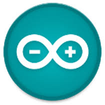
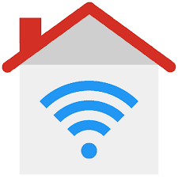
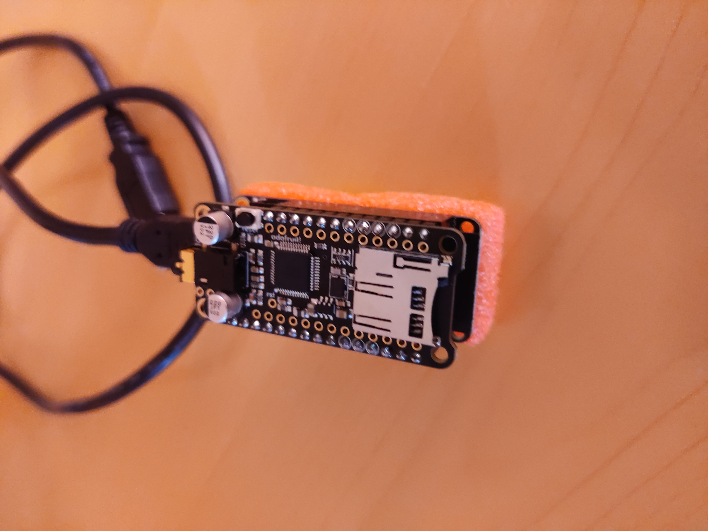
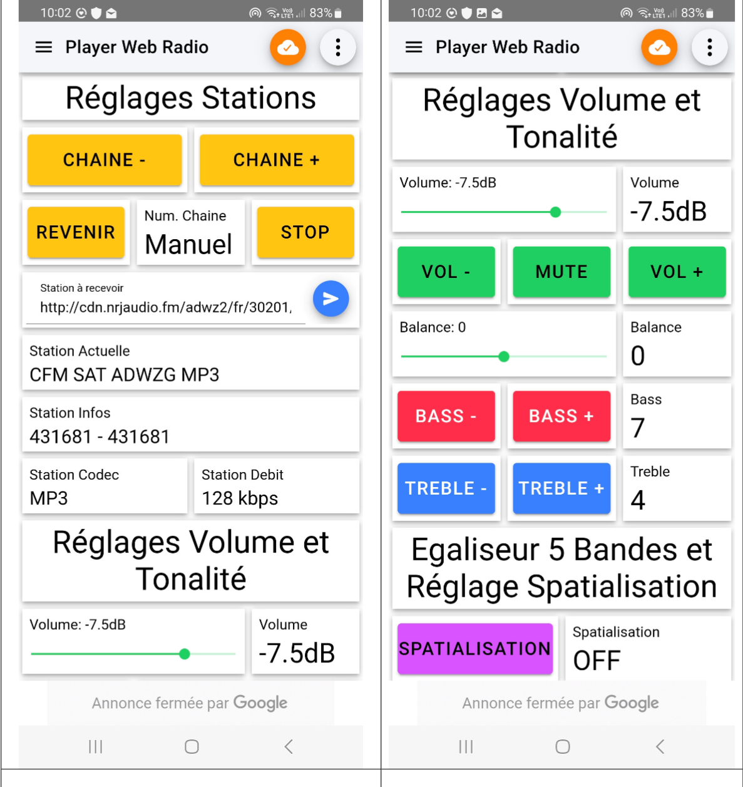

Résumé de la SAESAE Summary
Objectif :Objective: Le but de ce projet est d'utiliser et de programmer deux cartes Arduino imbriquées dans le but d'accéder à la radio via internet. J'ai utilisé une application sur Android pour commander cette webradio à distance. The goal of this project is to use and program two stacked Arduino boards to access internet radio. I used an Android application to remotely control this web radio.
Au cours de ce projet, j'ai pu acquérir des compétences en During this project, I gained skills in programmation C++C++ programming, l'utilisation de la carte , using the Arduino ESP32 et la prise en main de l' board, and familiarizing myself with the Arduino IDE.
Consulter le code source sur GitHub View source code on GitHubEnvironnement et OutilsEnvironment and Tools
ESP32 & VS1053b
Microcontrôleur ESP32 (module Wi-Fi) couplé à une carte Codec audio VS1053b pour le décodage matériel des flux mp3 et AAC.ESP32 microcontroller (Wi-Fi module) paired with a VS1053b audio Codec board for hardware decoding of MP3 and AAC streams.

Arduino IDE
Environnement de développement utilisé pour la programmation en C++ du microcontrôleur et l'intégration des différentes bibliothèques réseau et audio.Development environment used for C++ programming of the microcontroller and integration of various network and audio libraries.

IoT MQTT Panel
Application Android permettant de créer une interface de contrôle à distance (sliders, boutons) communiquant via le protocole MQTT.Android application used to create a remote control interface (sliders, buttons) communicating via the MQTT protocol.
Aperçu du systèmeSystem Overview


Grandes étapes techniquesMain Technical Steps
1. Communication Matérielle1. Hardware Communication
L'ESP32 interagit avec le codec audio VS1053b via le bus The ESP32 interacts with the VS1053b audio codec via the SPI (Serial Peripheral Interface), un protocole synchrone utilisant les broches bus, a synchronous protocol using the MOSI, MISO, SCK et des signaux de contrôle comme pins, and control signals like XDCS.
2. Décodage Audio Matériel2. Hardware Audio Decoding
Le The VS1053b prend en charge le décodage direct des flux MP3/AAC. Le contrôle du son s'effectue en écrivant dans ses supports direct decoding of MP3/AAC streams. Sound control is achieved by writing to its registres SCISCI registers, comme , such as SCI_VOL (volume) et (volume) and SCI_BASS (basses et aigus). (bass and treble).
3. Gestion Dynamique du Wi-Fi3. Dynamic Wi-Fi Management
Implémentation de la bibliothèque Implementation of the WiFiManager. Elle permet à l'ESP32 de créer un portail captif temporaire si aucun réseau n'est connu, évitant ainsi de coder les identifiants Wi-Fi en dur dans le programme. library. It allows the ESP32 to create a temporary captive portal if no known network is found, avoiding hardcoding Wi-Fi credentials into the program.
4. Lecture des Flux (Streaming)4. Stream Reading (Streaming)
Utilisation de la bibliothèque Use of the ESP32_VS1053_Stream pour récupérer les flux audio des webradios directement depuis leurs URL et les envoyer au décodeur de manière fluide. library to retrieve audio streams from web radios directly from their URLs and send them seamlessly to the decoder.
5. Commandes Clavier (Série)5. Keyboard Commands (Serial)
Création d'une interface de pilotage local via la Creation of a local control interface via the console série USB (115200 baud)USB serial console (115200 baud). L'écoute du clavier permet à l'utilisateur de changer de station (. Listening to the keyboard allows the user to change stations (n/v), régler le volume (), adjust volume (y/b), ajuster les basses/aigus, ou activer la spatialisation (), tweak bass/treble, or enable spatialization (s).
6. Télémétrie et Contrôle MQTT6. Telemetry and MQTT Control
Mise en place du protocole Implementation of the MQTT (Message Queuing Telemetry Transport), basé sur la publication-abonnement (PubSub). Il permet de recevoir les commandes de l'application Android et de renvoyer l'état actuel de la radio. protocol, based on publish-subscribe (PubSub). It receives commands from the Android app and sends back the current state of the radio.
7. Traitement Spatialisant7. Spatial Processing
Activation de la fonction Activation of the codec's EarSpeaker du codec via le registre function via the SCI_MODE pour simuler une écoute sur haut-parleurs via un casque, et utilisation d'un plugin pour intégrer un register to simulate loudspeaker listening through headphones, and use of a plugin to integrate a égaliseur 5 bandes5-band equalizer.
Compétences validéesValidated Skills
Détail des Apprentissages Critiques (BUT1) développés lors de cette SAE :Details of the Critical Learnings (BUT1) developed during this SAE:
- AC12.03 Déployer des supports de transmission. Deploy transmission media.
- AC13.01 Utiliser un système informatique et ses outils. Use a computer system and its tools.
- AC13.02 Lire, exécuter, corriger et modifier un programme. Read, execute, debug, and modify a program.
- AC13.06 S'intégrer dans un environnement propice au développement et au travail collaboratif. Integrate into an environment conducive to development and collaborative work.
Analyse réflexiveReflective Analysis
Ce projet fut particulièrement intéressant à réaliser car il nous invite à découvrir par nous-mêmes les différentes fonctionnalités disponibles en explorant les fiches techniques des composants et les capacités des bibliothèques. Ce travail de programmation conjointe m'a de plus appris à gérer efficacement un projet en équipe. This project was particularly interesting to carry out as it invited us to discover the available features on our own by exploring component datasheets and library capabilities. Furthermore, this joint programming work taught me how to effectively manage a team project.